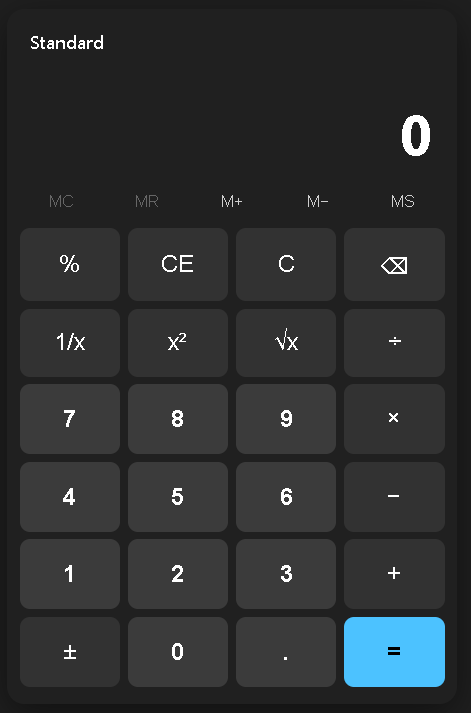
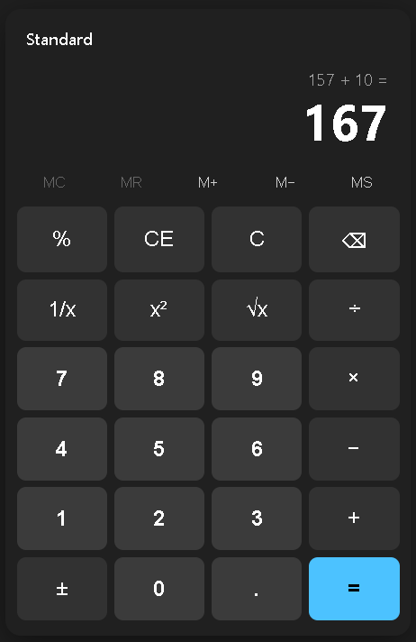

Ship AI-written code that a real team already reviewed.
Maestro is a conductor-led team of specialist subagents for Claude Code — hand it a story, task, or rough idea and get back a change a real team already reviewed.
- WhatA strategist, an architect, and an implementer — orchestrated as one team inside Claude Code.
- ProblemSolo AI codegen ships unreviewed work, in one voice, straight to your branch.
- WhyFour independent verifiers — code review, security, QA, and UX — can each send the work back before it ships.
/maestro
feasibility /what-if
One model writing code is not a team shipping code.
The fastest way to accumulate risk is to let unreviewed generation flow straight to your branch. Maestro puts a review gate — with real, independent roles — between the idea and the diff.
Before Solo AI codegen
- Unreviewed. Output goes to your branch with no independent gate.
- One voice. The same model that wrote it also judges it — no security, QA, or UX perspective.
- Ships silently. Nothing surfaces what got skipped, deferred, or quietly assumed.
With Maestro A review-gated team
- Review-gated. Four independent verifiers with veto power stand between intent and shipped code.
- Multi-role. Intent, architecture, implementation, code review, security, QA, and UX — each done by a specialist.
- Safety-bounded & honest. Retries are capped; nothing ships silently — every deferral is reported with its rationale.
A conductor and seven specialists.
One skill conducts the room; seven role subagents do the work. Four of them can send the work back.
The Orchestrator
In Claude Code, a subagent cannot invoke other subagents — only the main session can. So the conductor is not an eighth agent. It is a Skill run by the main session, which can spawn the seven role subagents. That is the only shape that actually runs — and it stays portable, versioned, and testable.
- Routes work through the state machine, stage by stage.
- Arbitrates ties when verifiers conflict.
- Curates exactly the context each agent needs — never a raw dump.
- Disposes every finding: block, backlog, or dismiss.
- Enforces the retry ceiling and accounts tokens (observability only).
- Writes the end-of-run summary for the human.
It never writes or reviews code. The verifiers are read-only and return structured verdicts; the orchestrator is the sole writer of state, so running the four verifiers in parallel never races.
They move the work forward
Produce the requirement, the design, and the change.-
Strategist
Knows and verifies the requirement — turns a request into a testable requirement with explicit acceptance criteria, or bounces it back to the human when it is genuinely ambiguous.
No veto -
Principal Engineer
The architect — designs the smallest, cleanest approach that satisfies the requirement and fits the existing codebase. Read-only; does not write the change.
No veto -
Staff Engineer (Implementer)
The Implementer — writes the actual change following the architecture, and on a rework pass fixes only the specific findings routed to it. The only Maestro agent that writes code.
No vetoWrites code
They can send the work back
Four independent gates. Any one can REJECT with structured findings.-
Code Reviewer
Enforces KISS and best practices, and verifies the requirement was actually met — including, on rework, that the exact routed findings were fixed.
Veto · can send work backRead-only -
Security Engineer
Best practices, compliance, and no new risk — injection, authn/authz gaps, secret handling, unsafe defaults, dependency risk. May run scanners.
Veto · can send work backRead-only -
QA Engineer
Verifies the change against the requirement's acceptance criteria — tracing each criterion to evidence, checking edge cases and error paths, and running the test suite where possible.
Veto · can send work backRead-only -
UX Engineer
World-class user experience — interaction flow, clarity, accessibility, error/empty/loading states, and visual consistency — verifying the change delivers the user-facing intent.
Veto · can send work backRead-only
Two entry points. Same team.
Ask “is this even possible?” before you spend a build — or run the full, review-gated pipeline. Pick by what you need right now.
Build — when you’re ready to ship
Runs the whole pipeline: intent → architecture → implementation → four parallel verifiers → arbitration, then done, rework, or an escalation to you. Use it when you want a reviewed change.
What-if — when you’re still deciding
Runs only the front half — strategist then architect — and stops before any code. Returns an honest feasibility verdict with cited evidence. Use it to assess before you build.
The build pipeline
/maestro
A one-way state machine. Every stage is a hand-off through the conductor; the four verifiers run in parallel, and arbitration decides the outcome.
- IntakeRequirement stored verbatim & immutable
- StrategyStrategist scopes acceptance criteria
- ArchitecturePrincipal engineer designs the approach
- ImplementationStaff engineer writes the change
- Verification four verifiers, in parallel
- ArbitrationConductor disposes findings & decides
- DONE REWORK ESCALATED_TO_HUMAN
Bounded retry loop. A REWORK routes only the targeted findings back to the
implementer — and, next pass, to the specific verifiers who need to confirm the fix.
It’s bounded at retry.max = 3 (default); when the ceiling is hit, the
conductor stops looping and escalates the cause to you instead of thrashing
forever.
The what-if feasibility flow
/what-if
Only the strategist and principal engineer are ever invoked. It can never reach implementation or verification, and it never touches your source.
- StrategyStrategist frames it as a feasibility problem
- ArchitecturePrincipal engineer studies the approach; risks become caveats
- STOP before any code No implementer. No verifiers. Never touches source.
- VerdictHonest feasibility call with cited evidence
Every verdict carries reasoning and at least one cited evidence ref — an accurate
INFEASIBLE is the point, and the verdict is never inflated. A non-INFEASIBLE study
is promotable with /maestro run WHATIF-<id>, which re-runs the
full pipeline (seeded as prior art, nothing skipped). An INFEASIBLE study is
refused.
How findings get disposed — and when it stops to ask you.
BLOCK
Must be fixed before the task proceeds. Added to the rework reasons routed back to the implementer.
BACKLOG
Valid but out of scope — filed as a new standalone task with a rationale, and the human is notified. The task proceeds.
DISMISS
Rare — not valid or not actionable, requires a clear rationale. Security findings may never be dismissed — only BLOCK or BACKLOG.
Tie-break priority
When verifiers conflict, the conductor re-reads the requirement and weighs by this default severity order — unless the requirement itself states otherwise:
It stops and asks you when:
- The retry ceiling would be exceeded — stop thrashing, hand off.
- A high-severity security finding can’t be safely remediated — it recurs after rework, or the fix is contentious.
- Verifiers disagree about what the requirement means — that’s a product decision, not one to arbitrate on severity.
Don’t take it on faith — read a real run.
Eight full end-to-end transcripts capture every stage, each verifier’s verdict, how findings were disposed, rework loops, and independently re-run test output.


Run 005 took a 9-word ask — “build a visual calculator like the Windows one” — to a shipped, self-contained working app: via a multi-turn strategist↔principal scope negotiation, a testable engine/UI architecture (28/28 headless golden-vector tests and a 20k-sequence fuzz), a dedicated visual-fidelity review, and one rework loop.
- 001
Email validator
Clean happy path — security load-tested the regex for ReDoS; QA re-ran the suite itself.
- 002
Path-traversal rework
A verifier rejects, the finding is routed back, and re-verification confirms the specific fix.
- 003
Escalation on a requirement conflict
Security and UX demand mutually exclusive things, so the conductor escalates to the human.
- 004
The retry ceiling
An unbounded requirement — the ceiling stops the loop and escalates the cause instead of looping forever.
- 005
A real calculator app
A 9-word ask to a shipped, self-contained working app — the screenshots above.
- 006
Token accounting
A best-effort token ledger written once per turn — additive schema, observability only.
- 007
A rework loop, dogfooded
Launched from a backlog item; only the two verifiers who raised findings re-check them.
- 008
A feasibility command that answers “no”
Builds
/what-if— and returns a well-evidenced INFEASIBLE on its own example.
Two commands to install. One to run.
Maestro is a Claude Code plugin. Add the marketplace, install, and hand it a task.
# add this repo as a marketplace, then install the plugin
claude plugin marketplace add consultwithmike/maestro
claude plugin install maestro# run the full pipeline on a task
/maestro Add rate limiting to the public API: 100 req/min per key, 429 on exceed.
# other entry points
/what-if "can we split token usage into input/output?"
/maestro-status
/maestro-backlog list